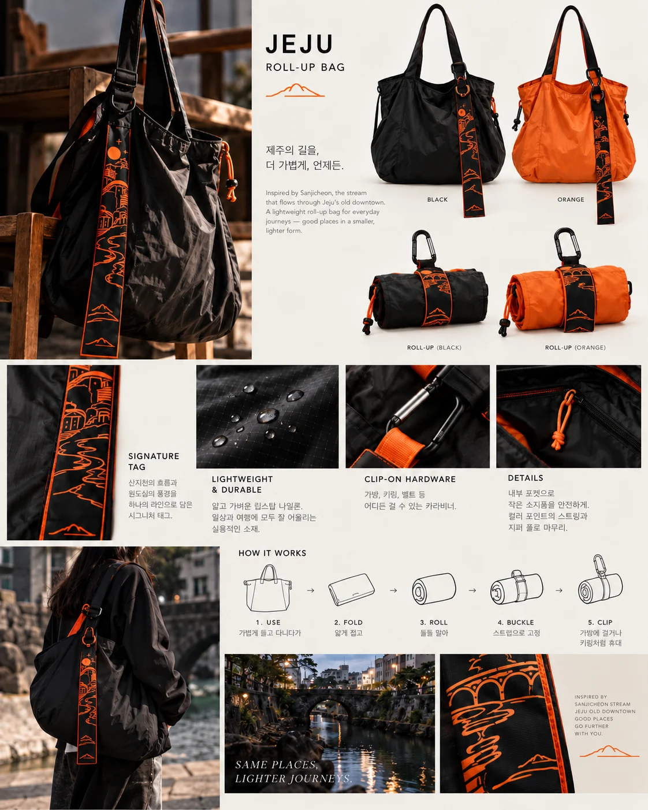
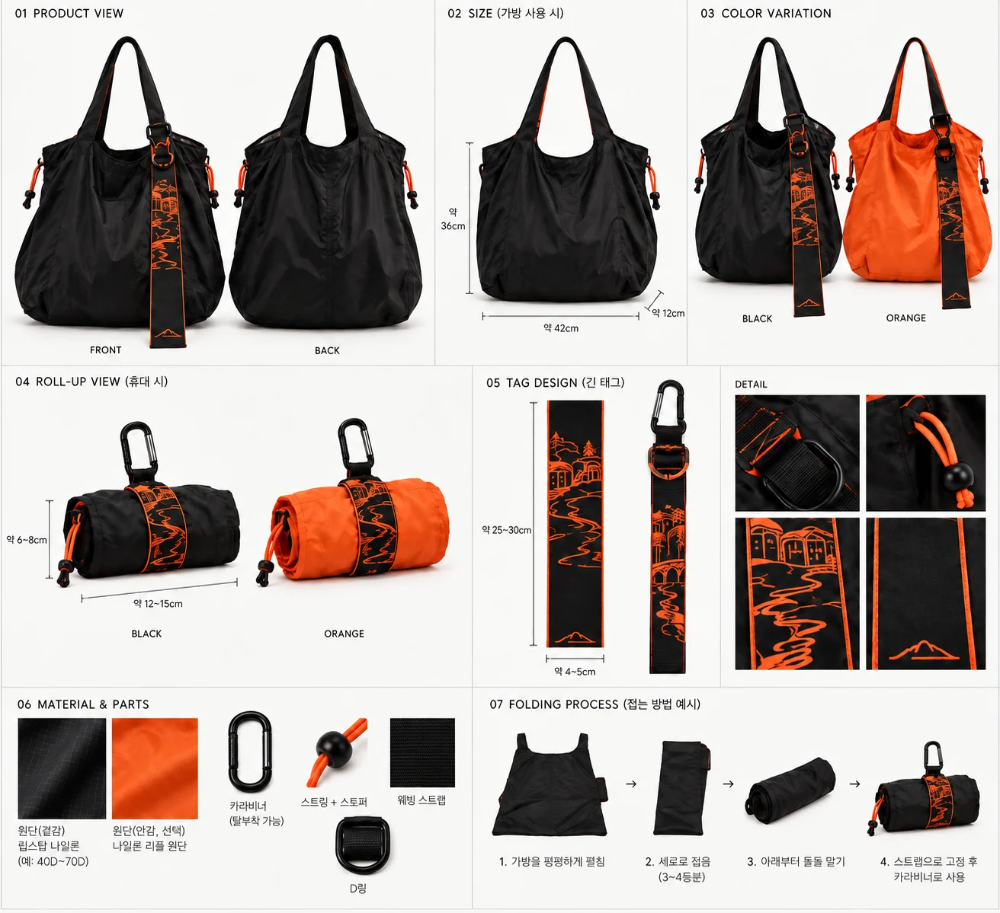

이야기가 물건이 될 때.
산지천을 접어서 가지고 다닌다면? 산지천 물길과 제주 원도심 풍경을 긴 태그의 주황색 선화에 담은 롤업백입니다. 검정·주황 두 색을 구상 중이며, 접어 말아 스트랩으로 고정한 뒤 카라비너로 걸 수 있습니다.
제작 방향을 보여주는 시안이며 판매 페이지가 아닙니다

검정
주황
가방 형태와 사양 시안 보기

크기·소재·부자재는 확정 사양이 아니라 검토 시안입니다.
- 쓰기
- 접기
- 말기
- 버클 잠그기
- 카라비너로 걸기